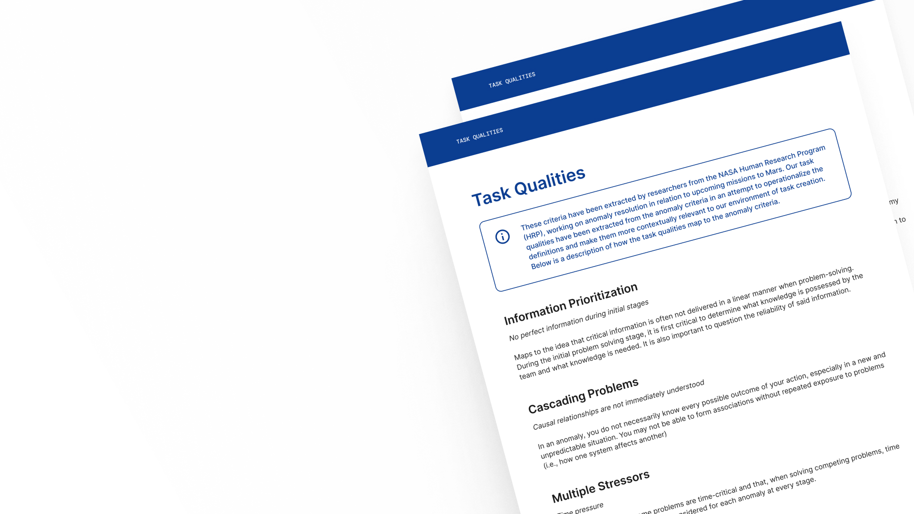

Providing researchers the tools and resources needed to effectively simulate and evaluate anomaly responses
To empower researchers to better identify gaps in anomaly resolution through evaluating teams' performances in anomaly-based tasks
Read more →
Task Qualities
Simulate the qualities of an anomaly
Read more →